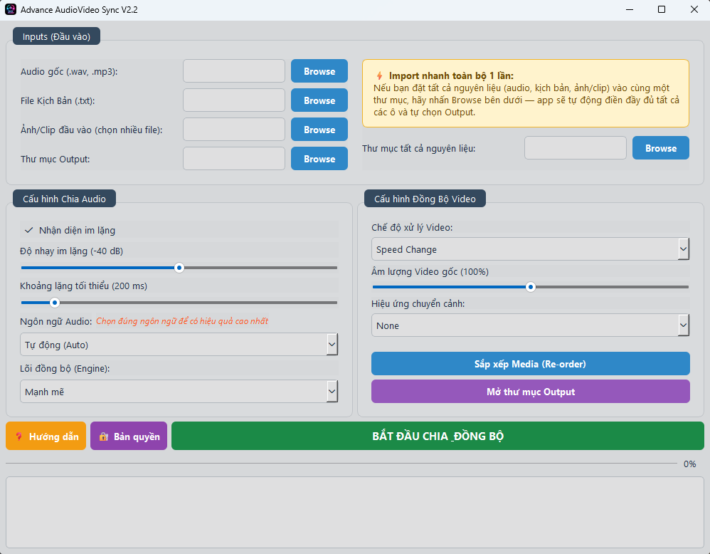
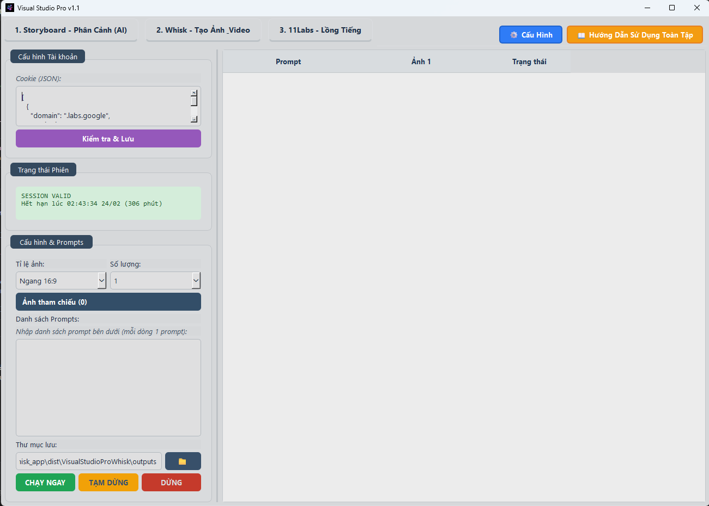
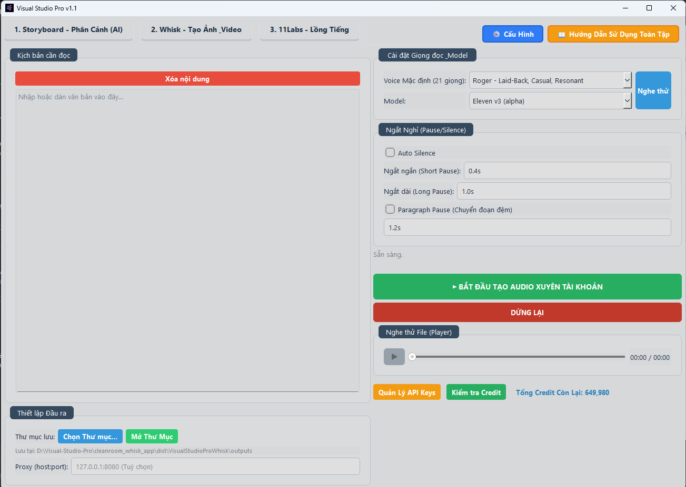

Elevate Your Channel
📖 Hướng dẫn sử dụng
⚠️ Lưu ý quan trọng — Đọc trước khi sử dụng
1. Đặt thư mục App ở ngoài ổ D: hoặc E:, không đặt trong các thư mục con — sẽ gây lỗi đường dẫn.
2. Các nguyên liệu như Ảnh, Video, Kịch bản... cũng để ngay ở thư mục trực thuộc ổ D: hay E: (Ví dụ: D:\KB1\) — tránh lỗi tên đường dẫn quá dài gây lỗi đồng bộ và lỗi render.
3. Nếu lần đầu sử dụng gặp lỗi Render, hãy bấm ngay nút Fix FFmpeg trên màn hình App này.
2. Các nguyên liệu như Ảnh, Video, Kịch bản... cũng để ngay ở thư mục trực thuộc ổ D: hay E: (Ví dụ: D:\KB1\) — tránh lỗi tên đường dẫn quá dài gây lỗi đồng bộ và lỗi render.
3. Nếu lần đầu sử dụng gặp lỗi Render, hãy bấm ngay nút Fix FFmpeg trên màn hình App này.
▶️ Quy trình làm việc
① Chọn File Audio
— Upload file âm thanh lồng tiếng đã chuẩn bị (xuất từ Tab 11Labs hoặc tự thu âm).
② Chọn File Kịch bản (.txt)
— Mỗi câu / cảnh nằm trên 1 dòng riêng. Số dòng phải khớp chính xác số ảnh/clip.
③ Chọn Thư mục Ảnh/Video
— Thư mục chứa các cảnh nền. Mỗi ảnh/clip tương ứng với 1 dòng kịch bản.
④ Bắt đầu Đồng bộ
— Nhấn BẮT ĐẦU ĐỒNG BỘ. App phân tích và căn thời lượng từng cảnh theo audio.
⑤ Xét duyệt Phân cảnh
— Màn hình phân cảnh hiện ra — chọn ảnh/video nào sẽ hiển thị ở cảnh nào.
⑥ Chọn Thư mục Đầu ra
— Nơi lưu video thành phẩm sau khi app xử lý xong.
⑦ Xuất Video
— App tính toán tốc độ (Speed/Trim/Loop) và xuất video khớp âm thanh chính xác từng ms.
— Upload file âm thanh lồng tiếng đã chuẩn bị (xuất từ Tab 11Labs hoặc tự thu âm).
② Chọn File Kịch bản (.txt)
— Mỗi câu / cảnh nằm trên 1 dòng riêng. Số dòng phải khớp chính xác số ảnh/clip.
③ Chọn Thư mục Ảnh/Video
— Thư mục chứa các cảnh nền. Mỗi ảnh/clip tương ứng với 1 dòng kịch bản.
④ Bắt đầu Đồng bộ
— Nhấn BẮT ĐẦU ĐỒNG BỘ. App phân tích và căn thời lượng từng cảnh theo audio.
⑤ Xét duyệt Phân cảnh
— Màn hình phân cảnh hiện ra — chọn ảnh/video nào sẽ hiển thị ở cảnh nào.
⑥ Chọn Thư mục Đầu ra
— Nơi lưu video thành phẩm sau khi app xử lý xong.
⑦ Xuất Video
— App tính toán tốc độ (Speed/Trim/Loop) và xuất video khớp âm thanh chính xác từng ms.
💡 Tip Import Nhanh
Đặt tất cả nguyên liệu vào cùng 1 thư mục → nhấn "Thư mục tất cả nguyên liệu" ở góc phải trên — app tự động điền đầy đủ.

⚠️ Lưu ý quan trọng — Đọc trước khi sử dụng
1. Đặt thư mục App ở ngoài ổ D: hoặc E:, không đặt trong các thư mục con — sẽ gây lỗi đường dẫn.
2. Các nguyên liệu như Ảnh, Video, Kịch bản... cũng để ngay ở thư mục trực thuộc ổ D: hay E: (Ví dụ: D:\KB1\) — tránh lỗi tên đường dẫn quá dài gây lỗi đồng bộ và lỗi render.
3. Nếu lần đầu sử dụng gặp lỗi Render, hãy bấm ngay nút Fix FFmpeg trên màn hình App này.
2. Các nguyên liệu như Ảnh, Video, Kịch bản... cũng để ngay ở thư mục trực thuộc ổ D: hay E: (Ví dụ: D:\KB1\) — tránh lỗi tên đường dẫn quá dài gây lỗi đồng bộ và lỗi render.
3. Nếu lần đầu sử dụng gặp lỗi Render, hãy bấm ngay nút Fix FFmpeg trên màn hình App này.
▶️ Quy trình làm việc chuẩn
① Chuẩn bị file đầu vào
— Audio: File lồng tiếng (.mp3, .wav, .m4a...)
— Kịch bản: File .txt, mỗi câu/cảnh trên 1 dòng, đúng thứ tự
— Thư mục media: Ảnh/clip đặt tên theo số thứ tự (001.jpg, 002.mp4...) tương ứng từng dòng kịch bản
— Thư mục Output: Nơi lưu kết quả — nên để trống
② Chia Audio theo Kịch bản
— App tự nhận diện điểm ngắt tự nhiên tại chỗ im lặng, không cắt giữa chừng câu nói
— Kết quả: danh sách đoạn với timestamp chính xác từng ms
③ Ghép Video + Audio
— Mỗi ảnh/clip được kéo giãn hoặc cắt để khớp thời lượng đoạn audio tương ứng
— Kết quả: file final_synced_video.mp4 trong thư mục Output
— Audio: File lồng tiếng (.mp3, .wav, .m4a...)
— Kịch bản: File .txt, mỗi câu/cảnh trên 1 dòng, đúng thứ tự
— Thư mục media: Ảnh/clip đặt tên theo số thứ tự (001.jpg, 002.mp4...) tương ứng từng dòng kịch bản
— Thư mục Output: Nơi lưu kết quả — nên để trống
② Chia Audio theo Kịch bản
— App tự nhận diện điểm ngắt tự nhiên tại chỗ im lặng, không cắt giữa chừng câu nói
— Kết quả: danh sách đoạn với timestamp chính xác từng ms
③ Ghép Video + Audio
— Mỗi ảnh/clip được kéo giãn hoặc cắt để khớp thời lượng đoạn audio tương ứng
— Kết quả: file final_synced_video.mp4 trong thư mục Output
🎵 Cấu hình Chia Audio
— Nhận diện im lặng: Nên bật — chỉ tắt nếu audio không có điểm ngắt rõ ràng
— Độ nhạy im lặng: Kéo trái nếu app cắt vào giữa câu; kéo phải nếu bỏ sót điểm cắt
— Khoảng lặng tối thiểu: Tăng nếu cắt quá vụn; giảm nếu bỏ sót khoảng ngắt ngắn
— Ngôn ngữ Audio: Chọn đúng ngôn ngữ — đây là nguyên nhân sai lệch phổ biến nhất
— Tiếng Nhật/Trung/Hàn: App tự chuyển sang chế độ xử lý đặc biệt
— Độ nhạy im lặng: Kéo trái nếu app cắt vào giữa câu; kéo phải nếu bỏ sót điểm cắt
— Khoảng lặng tối thiểu: Tăng nếu cắt quá vụn; giảm nếu bỏ sót khoảng ngắt ngắn
— Ngôn ngữ Audio: Chọn đúng ngôn ngữ — đây là nguyên nhân sai lệch phổ biến nhất
— Tiếng Nhật/Trung/Hàn: App tự chuyển sang chế độ xử lý đặc biệt
🎬 Cấu hình Đồng Bộ Video
— Speed Change: Kéo giãn/nén tốc độ clip cho khớp audio
— Trim / Loop: Cắt bớt hoặc lặp lại clip thay vì đổi tốc độ
— Âm lượng video nền: Đặt 0% nếu chỉ muốn giữ giọng lồng tiếng
— Hiệu ứng chuyển cảnh: None (cắt cứng) hoặc Fade In/Out
— Trim / Loop: Cắt bớt hoặc lặp lại clip thay vì đổi tốc độ
— Âm lượng video nền: Đặt 0% nếu chỉ muốn giữ giọng lồng tiếng
— Hiệu ứng chuyển cảnh: None (cắt cứng) hoặc Fade In/Out
💡 Mẹo Import nhanh
Đặt tất cả nguyên liệu vào cùng 1 thư mục → nhấn Browse → "Thư mục tất cả nguyên liệu" góc phải trên — app tự điền đầy đủ và tự chọn Output!

🔧 Cài đặt ban đầu
Bước 1 — Cài EXT Chrome: Auto Whisk — Chrome Web Store
Bước 2 — Truy cập Whisk: labs.google/fx/tools/whisk/project
Bước 3 — Mở Ext Auto Whisk và tạo ảnh.
Bước 2 — Truy cập Whisk: labs.google/fx/tools/whisk/project
Bước 3 — Mở Ext Auto Whisk và tạo ảnh.
⚠️ Chúng tôi có tặng các bạn App Whisk Free, nhưng các bạn chỉ nên sử dụng khi thực sự hiểu về Cookies, cách lấy và cách sử dụng cookies của Whisk. Đọc kỹ hướng dẫn bên dưới.
🖼️ Tab Whisk — Tạo Ảnh & Video AI Hàng Loạt
Tự động gửi từng Prompt sang Whisk (Google), sinh ảnh/video đa luồng và tải về máy hoàn toàn tự động.
🔑 Chuẩn bị — Lấy Cookie Whisk (xong 1 lần dùng mãi)
Bước 1 — Cài tiện ích Cookie Exporter trên Chrome Web Store: Tải về
Bước 2 — Truy cập labs.google/fx/tools/whisk/project → đăng nhập Gmail.
Bước 3 — Mở Cookie Exporter → nhấn "Copy as JSON".
Bước 4 — Dán vào ô "Cookie (JSON)" Tab Whisk → nhấn "Kiểm tra & Lưu".
Bước 2 — Truy cập labs.google/fx/tools/whisk/project → đăng nhập Gmail.
Bước 3 — Mở Cookie Exporter → nhấn "Copy as JSON".
Bước 4 — Dán vào ô "Cookie (JSON)" Tab Whisk → nhấn "Kiểm tra & Lưu".
📋 Các bước sinh ảnh
Bước 1 — Danh sách prompt từ Tab Storyboard tự động chuyển sang (mỗi dòng = 1 prompt). Hoặc copy-paste thủ công.
Bước 2 — Chọn Model, tỷ lệ khung hình và thư mục lưu kết quả.
Bước 3 — Chọn số ảnh muốn tạo cho mỗi prompt → nhấn "CHẠY NGAY". Sinh ảnh + tải về tự động, đa luồng. ☕ Pha cafe và chờ!
Bước 2 — Chọn Model, tỷ lệ khung hình và thư mục lưu kết quả.
Bước 3 — Chọn số ảnh muốn tạo cho mỗi prompt → nhấn "CHẠY NGAY". Sinh ảnh + tải về tự động, đa luồng. ☕ Pha cafe và chờ!

🎬 Cài đặt Flow
Bước 1 — Cài EXT Chrome: Auto Flow — Tải về và giải nén sau đó làm theo hướng dẫn
Bước 2 — Truy cập Flow: labs.google/fx/vi/tools/flow
Bước 3 — Mở Ext Autowhisk và tạo ảnh.
Bước 2 — Truy cập Flow: labs.google/fx/vi/tools/flow
Bước 3 — Mở Ext Autowhisk và tạo ảnh.
▶️ Video hướng dẫn Flow
YouTube đang chặn nhúng với video này (Lỗi 153). Bấm nút bên dưới để mở trực tiếp trên YouTube.
📢 Đọc trước — Ưu tiên phương pháp nào?
Các bạn ưu tiên tạo voice theo phương pháp cũ trước khi sử dụng phần mềm này. Ngoài ra có thể tham khảo thêm cách tạo voice tại đây:
1. aistudio.google.com/generate-speech — Google AI Studio TTS (Gemini 2.5 Flash)
2. tts.studyai.click — StudyAI TTS
⚠️ Đây là các trang tạo miễn phí và sẽ không có chất lượng/độ dài tương đương với các trang trả phí.
Chúng tôi cũng cung cấp 1 App tạo audio tích hợp, nhưng bạn chỉ nên sử dụng khi đã hiểu rõ về API 11Labs, Proxy/VPN.
1. aistudio.google.com/generate-speech — Google AI Studio TTS (Gemini 2.5 Flash)
2. tts.studyai.click — StudyAI TTS
⚠️ Đây là các trang tạo miễn phí và sẽ không có chất lượng/độ dài tương đương với các trang trả phí.
Chúng tôi cũng cung cấp 1 App tạo audio tích hợp, nhưng bạn chỉ nên sử dụng khi đã hiểu rõ về API 11Labs, Proxy/VPN.
🎙️ Tab 11Labs — Lồng Tiếng Tự Động
TTS tiếng Việt tự nhiên với ElevenLabs, xuất file MP3 tự động. Bắt buộc dùng VPN.
📋 Các bước thực hiện
Bước 0 — Chuẩn bị: hãy đọc hướng dẫn ở đây: AI86.Pro — Hướng dẫn 11Labs
Bước 1 — Kịch bản từ Tab Storyboard tự động chuyển sang, hoặc paste thủ công vào ô "Kịch bản cần đọc".
Bước 2 — Khuyến nghị dùng Model v3 — thế hệ mới nhất ElevenLabs, ngữ điệu tự nhiên, đọc tiếng Việt mượt mà.
Bước 3 — Tuỳ chỉnh thời gian nghỉ giữa câu/đoạn. Chọn Auto Silence để AI tự ngắt nghỉ.
Bước 4 — App tích hợp sẵn Pool 55 Key. Có thể nhấn "Quản lý API Keys" để dùng key cá nhân.
Bước 5 — Nhấn "BẮT ĐẦU TẠO AUDIO" — kết quả tự lưu file MP3. Nghe thử ngay bằng Audio Player tích hợp.
Bước 1 — Kịch bản từ Tab Storyboard tự động chuyển sang, hoặc paste thủ công vào ô "Kịch bản cần đọc".
Bước 2 — Khuyến nghị dùng Model v3 — thế hệ mới nhất ElevenLabs, ngữ điệu tự nhiên, đọc tiếng Việt mượt mà.
Bước 3 — Tuỳ chỉnh thời gian nghỉ giữa câu/đoạn. Chọn Auto Silence để AI tự ngắt nghỉ.
Bước 4 — App tích hợp sẵn Pool 55 Key. Có thể nhấn "Quản lý API Keys" để dùng key cá nhân.
Bước 5 — Nhấn "BẮT ĐẦU TẠO AUDIO" — kết quả tự lưu file MP3. Nghe thử ngay bằng Audio Player tích hợp.
